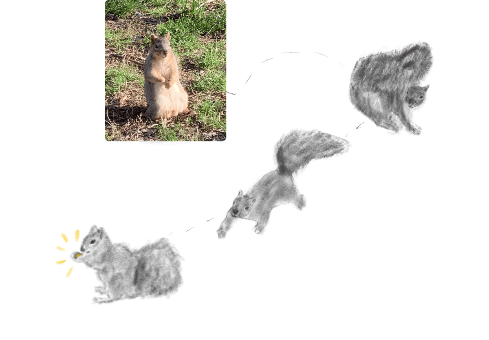
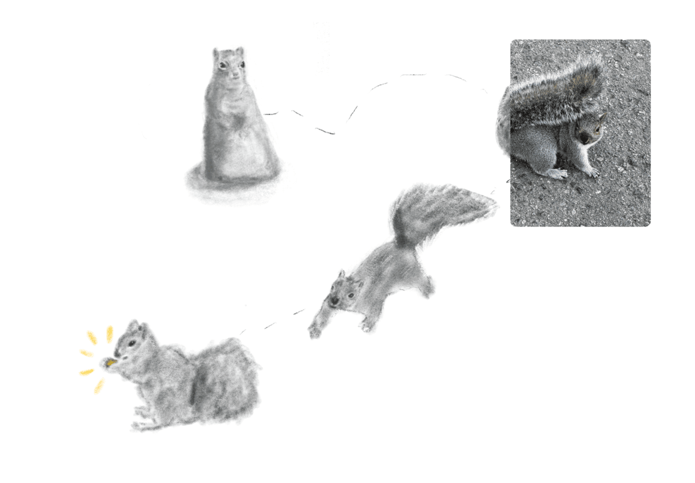
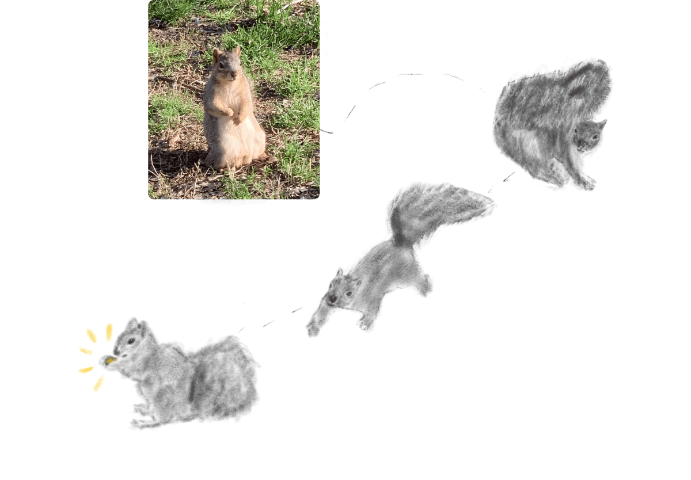
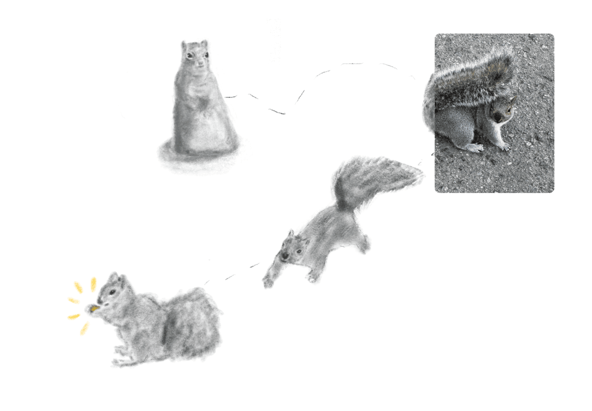
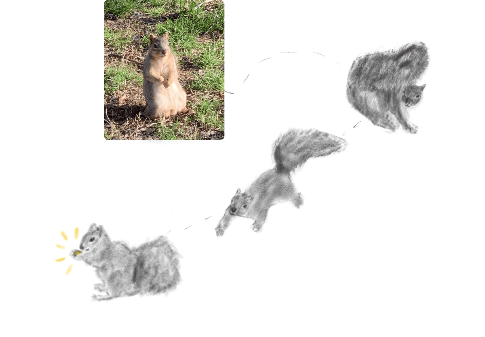
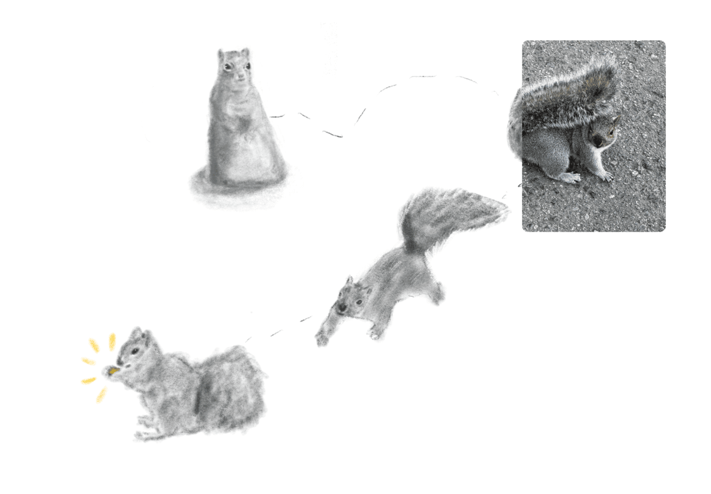
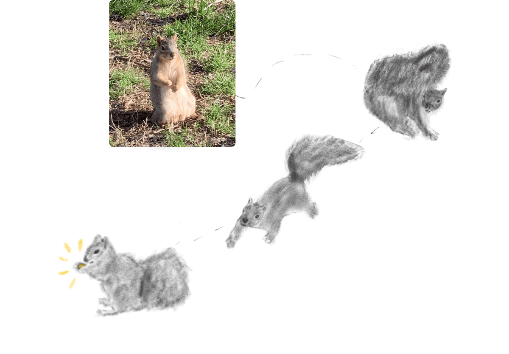
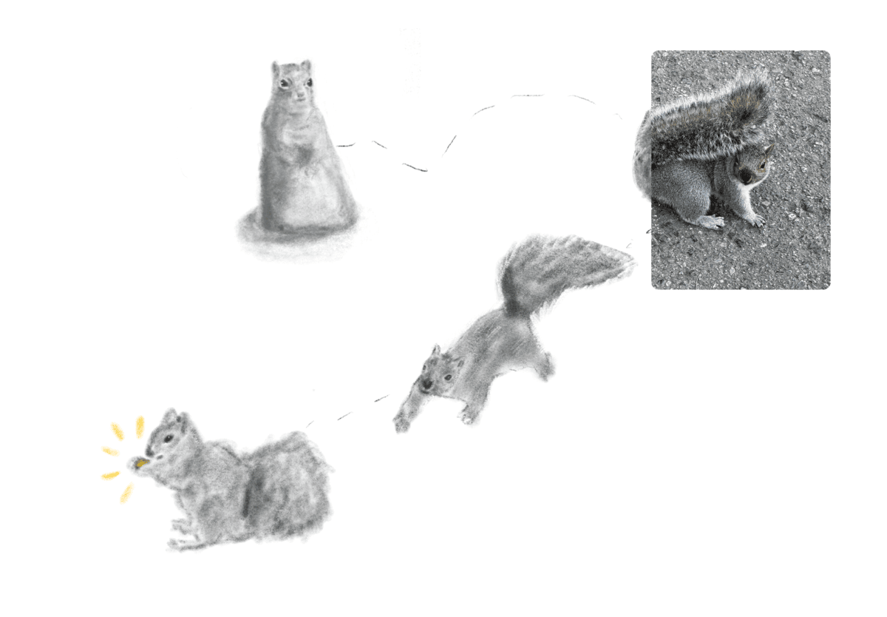

 



If you are reading this it must mean you have aspirations of being a distiguished Squirrel.
Hover over the images to learn the detailed process of becoming the best version of your Squirrely self.
1. Stand and stare menacingly.
2. Stick tongue out slightly for swag
3. Put paw in fist
4. Look around until you spot a nut
5. When you see it bring your tail to your head
6. Look at the nut with conviction
7. Now you are in pursuit
8. Run your max speed this is your moment
9. Don't let it get away...
10. Victory is yours bask in it!